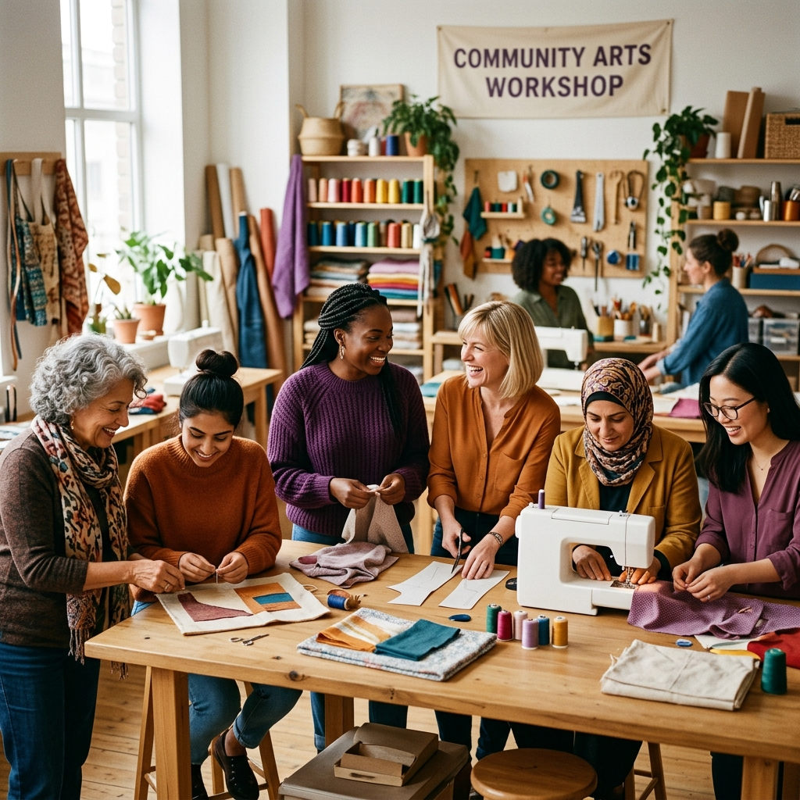

Women Guided
Volunteers
Communities

Scholarship programs
Industry-linked sessions
She Can Foundation is built upon a fundamental vision: a world where every woman has access to the resources, learning hubs, and mentorship required to secure a self-sustaining future.
From computer training modules and basic literacy scholarship aids to public leadership networks, our initiatives aim directly at eliminating gender disparities and building active self-reliance.
Meet Our LeadersA preview of the structured initiatives we manage for comprehensive social development.
Basic educational aid, scholarships, and scholarship drives for girls in community schools.
Read ProgramConfidence drills, vision setting, and management training for high-potential mentors.
Read ProgramVital web navigation, spreadsheets training, and essential coding classes for job listings.
Read ProgramActive Volunteers
Women Empowered
Workshops Held
Communities Served
Real experiences shared by graduates and support personnel across Mumbai.